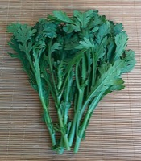

しょくようぎく（食用菊）の生産量 都道府県ランキング
1位から3位までと、とれた量
しょくようぎくが日本でいちばん多くとれるのは愛知県です。281 tで、全国（474 t）の59%を占めます。

| 順位 | 都道府県 | 収穫量 | 全国に占める割合 |
|---|---|---|---|
| 1位 | 愛知県 | 281 t | 59% |
| 2位 | 山形県 | 101 t | 21% |
| 3位 | 新潟県 | 47 t | 9.9% |
この数字について
- 分類：キク科
- 全国の収穫量：474 t
- この数字が表すもの：収穫量（畑や田でとれた重さ）
- 調査：地域特産野菜生産状況調査 令和6年産
- 6県分を調査（調査していない県は順位に入りません）
しょくようぎくの生産量について、よくある質問
- しょくようぎくの生産量が日本一の都道府県はどこですか？
- 愛知県です。地域特産野菜生産状況調査（令和6年産）で281 tでした。
- しょくようぎくの生産量ランキング2位・3位はどこですか？
- 2位は山形県（101 t）、3位は新潟県（47 t）です。
- しょくようぎくの全国の生産量はどれくらいですか？
- 474 t（令和6年産）です。